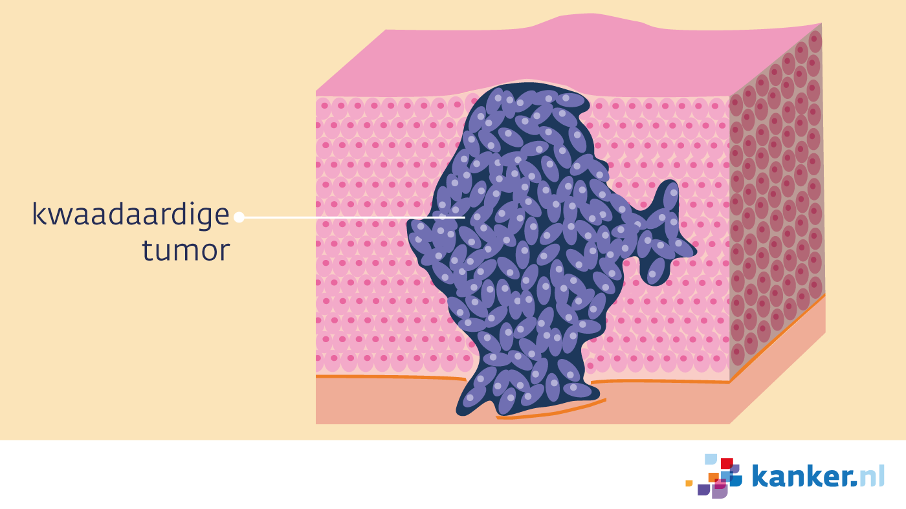
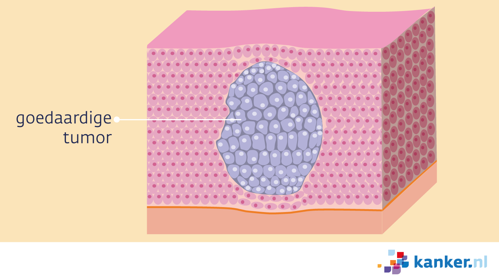

Kanker is een ziekte die heel veel voorkomt, in Nederland en over de hele wereld. Eigen lichaamscellen veranderen in kwaadaardige cellen door verkeerd te delen. Als deze kwaadaardige cellen de mogelijkheid hebben om uitzaaiing te genereren en zonder rem door te groeien, wordt het kanker genoemd. Wat belangrijk is om te weten is dat kanker en tumor niet hetzelfde zijn en je moet onderscheid maken tussen kwaadaardige en goedaardige tumoren.
Kwaadaardige tumor

We spreken van kanker als de tumor kwaadaardig is. Dat wil zeggen dat de ‘ontspoorde’ cellen omliggende weefsels en organen kunnen binnendringen. In tegenstelling tot goedaardige gezwellen kan kanker zich uitzaaien naar andere delen van het lichaam. Kanker kan zich niet van het ene lichaam naar het andere verplaatsen. Het is dus niet besmettelijk.
Goedaardige tumor

Goedaardige tumoren zijn nauwelijks gevaarlijk. Dit komt doordat het gezwel niet door andere weefsels heen groeit, ook kan het niet uitzaaien naar andere organen. Zelfs zonder deze eigenschappen kan een goedaardige tumor nog steeds tot pijn lijden. Dan kan je de tumor natuurlijk verwijderen.
Voorbeelden van goedaardige tumoren zijn:
Een wrat: Deze kan je vaker verwijderen met heel koude stikstof waardoor je de kern van de wrat eigenlijk vernietigt en de wrat zo niet meer kan doorgroeien.
Een darmpoliep: De grootte van de poliep en hoe ver de poliep in de darm ligt, bepalen hoe lang de ingreep duurt. De ingreep duurt meestal tussen de 45 en 90 minuten. Soms lukt het niet om de poliep te verwijderen of geeft de ingreep een te grote kans op problemen.
Een lipoom (ophoping van vet op de huid): De huisarts maakt het vetbultje en de huid eromheen goed schoon en hij verdooft met een prik de huid rond het vetbultje.
De huisarts snijdt vervolgens het vetbultje voorzichtig weg met een klein mesje en hij hecht de wond als dat nodig is.
Je weet nu wat goedaardige tumoren zijn, maar wat is een kwaadaardige tumor precies? Zoals ik al eerder heb uitgelegd, zijn het kankercellen die oneindig groeien in omliggende weefsels en organen. Deze kankercellen kunnen zelfs losraken van de tumor en via het bloed of de lymfe zich verspreiden naar een andere plek in het lichaam. Daar zorgen ze voor een nieuwe tumor, dit heet uitzaaiing. Maar waarom zijn deze kwaadaardige tumoren zo gevaarlijk? Omdat deze kankercellen alleen maar door blijven groeien kan dit tot veel pijn lijden omdat een tumor veel ruimte inneemt in je lichaam. Het kan drukken tegen de huid, spieren of botten.
Soms kunnen goedaardige tumoren zelfs kwaadaardig worden. De tumorcellen gaan steeds meer afwijken van normale cellen en gaan vervolgens ongecontroleerd delen. Dit gebeurt heel weinig, maar houdt er altijd rekening mee. Je kan controles bij de arts houden die dan de afwijkende cellen in de gaten houdt.